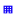

<!doctype html>
<html lang="en">
    <head>
        <meta charset="utf-8">
        <meta http-equiv="X-UA-Compatible" content="IE=edge">
        <meta name="viewport" content="initial-scale=1,user-scalable=no,maximum-scale=1,width=device-width">
        <meta name="mobile-web-app-capable" content="yes">
        <meta name="apple-mobile-web-app-capable" content="yes">
        <link rel="stylesheet" href="css/leaflet.css">
        <link rel="stylesheet" href="css/L.Control.Layers.Tree.css">
        <link rel="stylesheet" href="css/qgis2web.css">
        <link rel="stylesheet" href="css/fontawesome-all.min.css">
        <link rel="stylesheet" href="css/leaflet-search.css">
        <link rel="stylesheet" href="css/leaflet-control-geocoder.Geocoder.css">
        <link rel="stylesheet" href="css/leaflet-measure.css">
        <style>
        #map {
            width: 462px;
            height: 544px;
        }
        </style>
        <title></title>
    </head>
    <body>
        <div id="map">
        </div>
        <script src="js/qgis2web_expressions.js"></script>
        <script src="js/leaflet.js"></script>
        <script src="js/L.Control.Layers.Tree.min.js"></script>
        <script src="js/leaflet.rotatedMarker.js"></script>
        <script src="js/leaflet.pattern.js"></script>
        <script src="js/leaflet-hash.js"></script>
        <script src="js/Autolinker.min.js"></script>
        <script src="js/rbush.min.js"></script>
        <script src="js/labelgun.min.js"></script>
        <script src="js/labels.js"></script>
        <script src="js/leaflet-control-geocoder.Geocoder.js"></script>
        <script src="js/leaflet-measure.js"></script>
        <script src="js/leaflet-search.js"></script>
        <script src="data/SUKOLILO_1.js"></script>
        <script src="data/Sungai1_2.js"></script>
        <script src="data/Jalan3_3.js"></script>
        <script src="data/Pendidikan1_4.js"></script>
        <script>
        var map = L.map('map', {
            zoomControl:true, maxZoom:28, minZoom:1
        }).fitBounds([[-7.326244913322568,112.7570130669505],[-7.257676981242553,112.81520725284857]]);
        var hash = new L.Hash(map);
        map.attributionControl.setPrefix('<a href="https://github.com/tomchadwin/qgis2web" target="_blank">qgis2web</a> &middot; <a href="https://leafletjs.com" title="A JS library for interactive maps">Leaflet</a> &middot; <a href="https://qgis.org">QGIS</a>');
        var autolinker = new Autolinker({truncate: {length: 30, location: 'smart'}});
        function removeEmptyRowsFromPopupContent(content, feature) {
         var tempDiv = document.createElement('div');
         tempDiv.innerHTML = content;
         var rows = tempDiv.querySelectorAll('tr');
         for (var i = 0; i < rows.length; i++) {
             var td = rows[i].querySelector('td.visible-with-data');
             var key = td ? td.id : '';
             if (td && td.classList.contains('visible-with-data') && feature.properties[key] == null) {
                 rows[i].parentNode.removeChild(rows[i]);
             }
         }
         return tempDiv.innerHTML;
        }
        document.querySelector(".leaflet-popup-pane").addEventListener("load", function(event) {
          var tagName = event.target.tagName,
            popup = map._popup;
          // Also check if flag is already set.
          if (tagName === "IMG" && popup && !popup._updated) {
            popup._updated = true; // Set flag to prevent looping.
            popup.update();
          }
        }, true);
        var measureControl = new L.Control.Measure({
            position: 'topleft',
            primaryLengthUnit: 'meters',
            secondaryLengthUnit: 'kilometers',
            primaryAreaUnit: 'sqmeters',
            secondaryAreaUnit: 'hectares'
        });
        measureControl.addTo(map);
        document.getElementsByClassName('leaflet-control-measure-toggle')[0]
        .innerHTML = '';
        document.getElementsByClassName('leaflet-control-measure-toggle')[0]
        .className += ' fas fa-ruler';
        var bounds_group = new L.featureGroup([]);
        function setBounds() {
        }
        map.createPane('pane_GoogleSatellite_0');
        map.getPane('pane_GoogleSatellite_0').style.zIndex = 400;
        var layer_GoogleSatellite_0 = L.tileLayer('https://mt1.google.com/vt/lyrs=s&x={x}&y={y}&z={z}', {
            pane: 'pane_GoogleSatellite_0',
            opacity: 1.0,
            attribution: '<a href="https://www.google.at/permissions/geoguidelines/attr-guide.html">Map data ©2015 Google</a>',
            minZoom: 1,
            maxZoom: 28,
            minNativeZoom: 0,
            maxNativeZoom: 20
        });
        layer_GoogleSatellite_0;
        map.addLayer(layer_GoogleSatellite_0);
        function pop_SUKOLILO_1(feature, layer) {
            var popupContent = '<table>\
                    <tr>\
                        <td colspan="2">' + (feature.properties['Id'] !== null ? autolinker.link(feature.properties['Id'].toLocaleString()) : '') + '</td>\
                    </tr>\
                    <tr>\
                        <td colspan="2">' + (feature.properties['K'] !== null ? autolinker.link(feature.properties['K'].toLocaleString()) : '') + '</td>\
                    </tr>\
                    <tr>\
                        <td colspan="2">' + (feature.properties['LUAS'] !== null ? autolinker.link(feature.properties['LUAS'].toLocaleString()) : '') + '</td>\
                    </tr>\
                    <tr>\
                        <td colspan="2">' + (feature.properties['LUAS__ha_'] !== null ? autolinker.link(feature.properties['LUAS__ha_'].toLocaleString()) : '') + '</td>\
                    </tr>\
                    <tr>\
                        <td colspan="2">' + (feature.properties['Shape_Leng'] !== null ? autolinker.link(feature.properties['Shape_Leng'].toLocaleString()) : '') + '</td>\
                    </tr>\
                    <tr>\
                        <td colspan="2">' + (feature.properties['Shape_Le_1'] !== null ? autolinker.link(feature.properties['Shape_Le_1'].toLocaleString()) : '') + '</td>\
                    </tr>\
                    <tr>\
                        <td colspan="2">' + (feature.properties['Shape_Area'] !== null ? autolinker.link(feature.properties['Shape_Area'].toLocaleString()) : '') + '</td>\
                    </tr>\
                    <tr>\
                        <td colspan="2">' + (feature.properties['KODE'] !== null ? autolinker.link(feature.properties['KODE'].toLocaleString()) : '') + '</td>\
                    </tr>\
                </table>';
            layer.bindPopup(popupContent, {maxHeight: 400});
            var popup = layer.getPopup();
            var content = popup.getContent();
            var updatedContent = removeEmptyRowsFromPopupContent(content, feature);
            popup.setContent(updatedContent);
        }

        function style_SUKOLILO_1_0() {
            return {
                pane: 'pane_SUKOLILO_1',
                opacity: 1,
                color: 'rgba(69,227,26,1.0)',
                dashArray: '',
                lineCap: 'butt',
                lineJoin: 'miter',
                weight: 4.0, 
                fillOpacity: 0,
                interactive: true,
            }
        }
        map.createPane('pane_SUKOLILO_1');
        map.getPane('pane_SUKOLILO_1').style.zIndex = 401;
        map.getPane('pane_SUKOLILO_1').style['mix-blend-mode'] = 'normal';
        var layer_SUKOLILO_1 = new L.geoJson(json_SUKOLILO_1, {
            attribution: '',
            interactive: true,
            dataVar: 'json_SUKOLILO_1',
            layerName: 'layer_SUKOLILO_1',
            pane: 'pane_SUKOLILO_1',
            onEachFeature: pop_SUKOLILO_1,
            style: style_SUKOLILO_1_0,
        });
        bounds_group.addLayer(layer_SUKOLILO_1);
        map.addLayer(layer_SUKOLILO_1);
        function pop_Sungai1_2(feature, layer) {
            var popupContent = '<table>\
                    <tr>\
                        <td colspan="2">' + (feature.properties['NAMOBJ'] !== null ? autolinker.link(feature.properties['NAMOBJ'].toLocaleString()) : '') + '</td>\
                    </tr>\
                    <tr>\
                        <td colspan="2">' + (feature.properties['TIPSNG'] !== null ? autolinker.link(feature.properties['TIPSNG'].toLocaleString()) : '') + '</td>\
                    </tr>\
                    <tr>\
                        <td colspan="2">' + (feature.properties['KLSSNG'] !== null ? autolinker.link(feature.properties['KLSSNG'].toLocaleString()) : '') + '</td>\
                    </tr>\
                    <tr>\
                        <td colspan="2">' + (feature.properties['FCODE'] !== null ? autolinker.link(feature.properties['FCODE'].toLocaleString()) : '') + '</td>\
                    </tr>\
                    <tr>\
                        <td colspan="2">' + (feature.properties['REMARK'] !== null ? autolinker.link(feature.properties['REMARK'].toLocaleString()) : '') + '</td>\
                    </tr>\
                    <tr>\
                        <td colspan="2">' + (feature.properties['SRS_ID'] !== null ? autolinker.link(feature.properties['SRS_ID'].toLocaleString()) : '') + '</td>\
                    </tr>\
                    <tr>\
                        <td colspan="2">' + (feature.properties['LCODE'] !== null ? autolinker.link(feature.properties['LCODE'].toLocaleString()) : '') + '</td>\
                    </tr>\
                    <tr>\
                        <td colspan="2">' + (feature.properties['METADATA'] !== null ? autolinker.link(feature.properties['METADATA'].toLocaleString()) : '') + '</td>\
                    </tr>\
                    <tr>\
                        <td colspan="2">' + (feature.properties['NAMWS'] !== null ? autolinker.link(feature.properties['NAMWS'].toLocaleString()) : '') + '</td>\
                    </tr>\
                    <tr>\
                        <td colspan="2">' + (feature.properties['NAMDAS'] !== null ? autolinker.link(feature.properties['NAMDAS'].toLocaleString()) : '') + '</td>\
                    </tr>\
                    <tr>\
                        <td colspan="2">' + (feature.properties['STATUS'] !== null ? autolinker.link(feature.properties['STATUS'].toLocaleString()) : '') + '</td>\
                    </tr>\
                    <tr>\
                        <td colspan="2">' + (feature.properties['WMAX'] !== null ? autolinker.link(feature.properties['WMAX'].toLocaleString()) : '') + '</td>\
                    </tr>\
                    <tr>\
                        <td colspan="2">' + (feature.properties['DBTMAX'] !== null ? autolinker.link(feature.properties['DBTMAX'].toLocaleString()) : '') + '</td>\
                    </tr>\
                    <tr>\
                        <td colspan="2">' + (feature.properties['SLPRT'] !== null ? autolinker.link(feature.properties['SLPRT'].toLocaleString()) : '') + '</td>\
                    </tr>\
                    <tr>\
                        <td colspan="2">' + (feature.properties['SHAPE_LEN'] !== null ? autolinker.link(feature.properties['SHAPE_LEN'].toLocaleString()) : '') + '</td>\
                    </tr>\
                </table>';
            layer.bindPopup(popupContent, {maxHeight: 400});
            var popup = layer.getPopup();
            var content = popup.getContent();
            var updatedContent = removeEmptyRowsFromPopupContent(content, feature);
            popup.setContent(updatedContent);
        }

        function style_Sungai1_2_0() {
            return {
                pane: 'pane_Sungai1_2',
                opacity: 1,
                color: 'rgba(16,0,247,1.0)',
                dashArray: '',
                lineCap: 'square',
                lineJoin: 'bevel',
                weight: 1.0,
                fillOpacity: 0,
                interactive: true,
            }
        }
        map.createPane('pane_Sungai1_2');
        map.getPane('pane_Sungai1_2').style.zIndex = 402;
        map.getPane('pane_Sungai1_2').style['mix-blend-mode'] = 'normal';
        var layer_Sungai1_2 = new L.geoJson(json_Sungai1_2, {
            attribution: '',
            interactive: true,
            dataVar: 'json_Sungai1_2',
            layerName: 'layer_Sungai1_2',
            pane: 'pane_Sungai1_2',
            onEachFeature: pop_Sungai1_2,
            style: style_Sungai1_2_0,
        });
        bounds_group.addLayer(layer_Sungai1_2);
        map.addLayer(layer_Sungai1_2);
        function pop_Jalan3_3(feature, layer) {
            var popupContent = '<table>\
                    <tr>\
                        <th scope="row">NAMRJL</th>\
                        <td>' + (feature.properties['NAMRJL'] !== null ? autolinker.link(feature.properties['NAMRJL'].toLocaleString()) : '') + '</td>\
                    </tr>\
                    <tr>\
                        <td colspan="2"><strong>KONRJL</strong><br />' + (feature.properties['KONRJL'] !== null ? autolinker.link(feature.properties['KONRJL'].toLocaleString()) : '') + '</td>\
                    </tr>\
                    <tr>\
                        <th scope="row">MATRJL</th>\
                        <td class="visible-with-data" id="MATRJL">' + (feature.properties['MATRJL'] !== null ? autolinker.link(feature.properties['MATRJL'].toLocaleString()) : '') + '</td>\
                    </tr>\
                    <tr>\
                        <th scope="row">FGSRJL</th>\
                        <td>' + (feature.properties['FGSRJL'] !== null ? autolinker.link(feature.properties['FGSRJL'].toLocaleString()) : '') + '</td>\
                    </tr>\
                    <tr>\
                        <td colspan="2">' + (feature.properties['UTKRJL'] !== null ? autolinker.link(feature.properties['UTKRJL'].toLocaleString()) : '') + '</td>\
                    </tr>\
                    <tr>\
                        <td colspan="2">' + (feature.properties['TOLRJL'] !== null ? autolinker.link(feature.properties['TOLRJL'].toLocaleString()) : '') + '</td>\
                    </tr>\
                    <tr>\
                        <td colspan="2">' + (feature.properties['WLYRJL'] !== null ? autolinker.link(feature.properties['WLYRJL'].toLocaleString()) : '') + '</td>\
                    </tr>\
                    <tr>\
                        <td colspan="2">' + (feature.properties['AUTRJL'] !== null ? autolinker.link(feature.properties['AUTRJL'].toLocaleString()) : '') + '</td>\
                    </tr>\
                    <tr>\
                        <td colspan="2">' + (feature.properties['KLSRJL'] !== null ? autolinker.link(feature.properties['KLSRJL'].toLocaleString()) : '') + '</td>\
                    </tr>\
                    <tr>\
                        <td colspan="2">' + (feature.properties['SPCRJL'] !== null ? autolinker.link(feature.properties['SPCRJL'].toLocaleString()) : '') + '</td>\
                    </tr>\
                    <tr>\
                        <td colspan="2">' + (feature.properties['JPARJL'] !== null ? autolinker.link(feature.properties['JPARJL'].toLocaleString()) : '') + '</td>\
                    </tr>\
                    <tr>\
                        <td colspan="2">' + (feature.properties['ARHRJL'] !== null ? autolinker.link(feature.properties['ARHRJL'].toLocaleString()) : '') + '</td>\
                    </tr>\
                    <tr>\
                        <td colspan="2">' + (feature.properties['STARJL'] !== null ? autolinker.link(feature.properties['STARJL'].toLocaleString()) : '') + '</td>\
                    </tr>\
                    <tr>\
                        <td colspan="2">' + (feature.properties['KLLRJL'] !== null ? autolinker.link(feature.properties['KLLRJL'].toLocaleString()) : '') + '</td>\
                    </tr>\
                    <tr>\
                        <td colspan="2">' + (feature.properties['MEDRJL'] !== null ? autolinker.link(feature.properties['MEDRJL'].toLocaleString()) : '') + '</td>\
                    </tr>\
                    <tr>\
                        <td colspan="2">' + (feature.properties['LOCRJL'] !== null ? autolinker.link(feature.properties['LOCRJL'].toLocaleString()) : '') + '</td>\
                    </tr>\
                    <tr>\
                        <td colspan="2">' + (feature.properties['JARRJL'] !== null ? autolinker.link(feature.properties['JARRJL'].toLocaleString()) : '') + '</td>\
                    </tr>\
                    <tr>\
                        <td colspan="2">' + (feature.properties['FCODE'] !== null ? autolinker.link(feature.properties['FCODE'].toLocaleString()) : '') + '</td>\
                    </tr>\
                    <tr>\
                        <td colspan="2">' + (feature.properties['REMARK'] !== null ? autolinker.link(feature.properties['REMARK'].toLocaleString()) : '') + '</td>\
                    </tr>\
                    <tr>\
                        <td colspan="2">' + (feature.properties['SRS_ID'] !== null ? autolinker.link(feature.properties['SRS_ID'].toLocaleString()) : '') + '</td>\
                    </tr>\
                    <tr>\
                        <td colspan="2">' + (feature.properties['LCODE'] !== null ? autolinker.link(feature.properties['LCODE'].toLocaleString()) : '') + '</td>\
                    </tr>\
                    <tr>\
                        <td colspan="2">' + (feature.properties['METADATA'] !== null ? autolinker.link(feature.properties['METADATA'].toLocaleString()) : '') + '</td>\
                    </tr>\
                    <tr>\
                        <td colspan="2">' + (feature.properties['SHAPE_LENG'] !== null ? autolinker.link(feature.properties['SHAPE_LENG'].toLocaleString()) : '') + '</td>\
                    </tr>\
                    <tr>\
                        <td colspan="2">' + (feature.properties['SHAPE_LEN'] !== null ? autolinker.link(feature.properties['SHAPE_LEN'].toLocaleString()) : '') + '</td>\
                    </tr>\
                </table>';
            layer.bindPopup(popupContent, {maxHeight: 400});
            var popup = layer.getPopup();
            var content = popup.getContent();
            var updatedContent = removeEmptyRowsFromPopupContent(content, feature);
            popup.setContent(updatedContent);
        }

        function style_Jalan3_3_0() {
            return {
                pane: 'pane_Jalan3_3',
                opacity: 1,
                color: 'rgba(227,26,28,1.0)',
                dashArray: '',
                lineCap: 'square',
                lineJoin: 'bevel',
                weight: 1.0,
                fillOpacity: 0,
                interactive: true,
            }
        }
        map.createPane('pane_Jalan3_3');
        map.getPane('pane_Jalan3_3').style.zIndex = 403;
        map.getPane('pane_Jalan3_3').style['mix-blend-mode'] = 'normal';
        var layer_Jalan3_3 = new L.geoJson(json_Jalan3_3, {
            attribution: '',
            interactive: true,
            dataVar: 'json_Jalan3_3',
            layerName: 'layer_Jalan3_3',
            pane: 'pane_Jalan3_3',
            onEachFeature: pop_Jalan3_3,
            style: style_Jalan3_3_0,
        });
        bounds_group.addLayer(layer_Jalan3_3);
        map.addLayer(layer_Jalan3_3);
        function pop_Pendidikan1_4(feature, layer) {
            var popupContent = '<table>\
                    <tr>\
                        <td colspan="2">' + (feature.properties['NAMOBJ'] !== null ? autolinker.link(feature.properties['NAMOBJ'].toLocaleString()) : '') + '</td>\
                    </tr>\
                    <tr>\
                        <td colspan="2">' + (feature.properties['LUAS'] !== null ? autolinker.link(feature.properties['LUAS'].toLocaleString()) : '') + '</td>\
                    </tr>\
                    <tr>\
                        <td colspan="2">' + (feature.properties['REMARK'] !== null ? autolinker.link(feature.properties['REMARK'].toLocaleString()) : '') + '</td>\
                    </tr>\
                    <tr>\
                        <td colspan="2">' + (feature.properties['Alamat'] !== null ? autolinker.link(feature.properties['Alamat'].toLocaleString()) : '') + '</td>\
                    </tr>\
                </table>';
            layer.bindPopup(popupContent, {maxHeight: 400});
            var popup = layer.getPopup();
            var content = popup.getContent();
            var updatedContent = removeEmptyRowsFromPopupContent(content, feature);
            popup.setContent(updatedContent);
        }

        function style_Pendidikan1_4_0() {
            return {
                pane: 'pane_Pendidikan1_4',
        rotationAngle: 0.0,
        rotationOrigin: 'center center',
        icon: L.icon({
            iconUrl: 'markers/Pendidikan1_4.svg',
            iconSize: [11.399999999999999, 11.399999999999999]
        }),
                interactive: true,
            }
        }
        map.createPane('pane_Pendidikan1_4');
        map.getPane('pane_Pendidikan1_4').style.zIndex = 404;
        map.getPane('pane_Pendidikan1_4').style['mix-blend-mode'] = 'normal';
        var layer_Pendidikan1_4 = new L.geoJson(json_Pendidikan1_4, {
            attribution: '',
            interactive: true,
            dataVar: 'json_Pendidikan1_4',
            layerName: 'layer_Pendidikan1_4',
            pane: 'pane_Pendidikan1_4',
            onEachFeature: pop_Pendidikan1_4,
            pointToLayer: function (feature, latlng) {
                var context = {
                    feature: feature,
                    variables: {}
                };
                return L.marker(latlng, style_Pendidikan1_4_0(feature));
            },
        });
        bounds_group.addLayer(layer_Pendidikan1_4);
        map.addLayer(layer_Pendidikan1_4);
        var osmGeocoder = new L.Control.Geocoder({
            collapsed: true,
            position: 'topleft',
            text: 'Search',
            title: 'Testing'
        }).addTo(map);
        document.getElementsByClassName('leaflet-control-geocoder-icon')[0]
        .className += ' fa fa-search';
        document.getElementsByClassName('leaflet-control-geocoder-icon')[0]
        .title += 'Search for a place';
        var baseMaps = {};
        var overlaysTree = [
            {label: ' Pendidikan1', layer: layer_Pendidikan1_4},
            {label: ' Jalan3', layer: layer_Jalan3_3},
            {label: ' Sungai1', layer: layer_Sungai1_2},
            {label: ' SUKOLILO', layer: layer_SUKOLILO_1},
            {label: "Google Satellite", layer: layer_GoogleSatellite_0},]
        var lay = L.control.layers.tree(null, overlaysTree,{
            //namedToggle: true,
            //selectorBack: false,
            //closedSymbol: '&#8862; &#x1f5c0;',
            //openedSymbol: '&#8863; &#x1f5c1;',
            //collapseAll: 'Collapse all',
            //expandAll: 'Expand all',
            collapsed: true,
        });
        lay.addTo(map);
        setBounds();
        map.addControl(new L.Control.Search({
            layer: layer_Pendidikan1_4,
            initial: false,
            hideMarkerOnCollapse: true,
            propertyName: 'NAMOBJ'}));
        document.getElementsByClassName('search-button')[0].className +=
         ' fa fa-binoculars';
        </script>
    </body>
</html>
